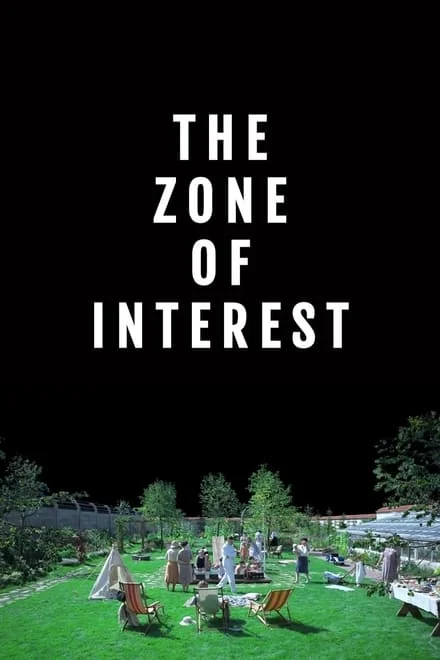
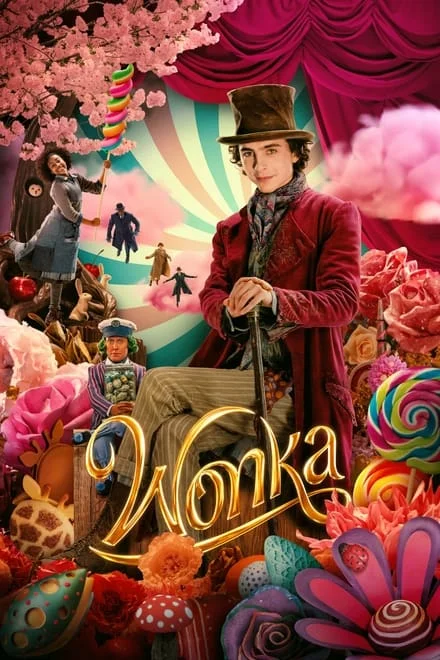

Trending
Dune Part Two

The Zone of Interest
Dune

Poor Things

Oppenheimer

Wonka
Madame Web
Recent Reviews
5/5
Oppenheimer is one of Nolan's most different and most challenging
film in a while, but it doesn't disappoint.
Reviewed on 21/2/2024
5/5
Oppenheimer is one of Nolan's most different and most challenging
film in a while, but it doesn't disappoint.
Reviewed on 21/2/2024
5/5
Oppenheimer is one of Nolan's most different and most challenging
film in a while, but it doesn't disappoint.
Reviewed on 21/2/2024